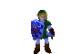
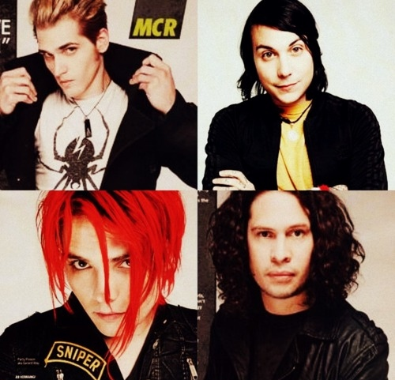
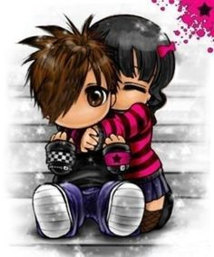
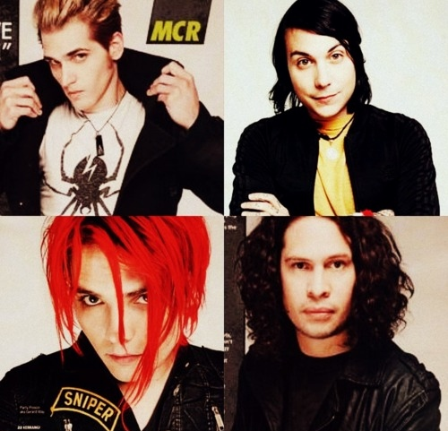
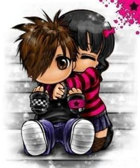

Scenegochi's Interests
| Hobbies | Listening to music1!1!!1 Trying new fashion and hair styles. Playing my guitar! |
|---|---|
| Music | Radiohead, My Chemical Romance, Mayday Parade, Blood on the Dance Floor, Bring Me The Horizon, Linkin Park, Basement Jaxx, Pierce the Veil, Sleeping With Sirens |
| Movies | Twilight, Shrek, Twilight, Coraline, The Dark Knight, |
| Television | Teen Titans, ICarly, Skins, American Dragon: Jake Long, Danny Phantom, Kids Next Door, Code Lyoko |
| Games | Minecraft, GUITAR HERO!!!, Roblox, Club Penguin, |
| Books | Twilight, Wattpad |
Scenegochi's Details
| Here for: | Making new friends !!!!! Sharing my interests!! |
|---|---|
| Hometown: | Tomogachi City |
| Height | 2 Inches |
| Occupation: | OfflineTV |

Max's Latest Blog Entry
Max's 2024 Recap (view more)
 Maxspace is finally here! (view more)
Maxspace is finally here! (view more)
[View All Blog Entries]
Max's 2024 Recap (view more)
Maxspace is finally here! (view more)
[View All Blog Entries]


About me:
hey... i’m Scenegochi (my friends call me Sceney) i like emo music, neon eyeliner, and ppl who actually get it TT my guitar is my best friend rn and twilight is literally my whole personality 💔 yes, i watch shrek unironically and no i won’t apologize for it (shrek 2 is cinema.) if you don’t love raven from teen titans we can’t talk tbh. i spend most of my time: 🎧 listening to songs that make me cry 🎸 trying to write lyrics i’ll never show anyone 💅 bleaching my hair in the bathroom at 3am 💻 playing minecraft + crying in club penguin igloos ✿ fave shows ✿ teen titans, skins (effy = me fr), code lyoko, danny phantom, american dragon, icarly (don’t @ me) ✿ games ✿ minecraft (i live in a cave), guitar hero (i slay), roblox (chaotic), club penguin (rip...) don’t message me if ur gonna be dry or fake i’m tired lol. just be real. xoxo, — xXforsaken.glitterXx ✨
hey... i’m Scenegochi (my friends call me Sceney) i like emo music, neon eyeliner, and ppl who actually get it TT my guitar is my best friend rn and twilight is literally my whole personality 💔 yes, i watch shrek unironically and no i won’t apologize for it (shrek 2 is cinema.) if you don’t love raven from teen titans we can’t talk tbh. i spend most of my time: 🎧 listening to songs that make me cry 🎸 trying to write lyrics i’ll never show anyone 💅 bleaching my hair in the bathroom at 3am 💻 playing minecraft + crying in club penguin igloos ✿ fave shows ✿ teen titans, skins (effy = me fr), code lyoko, danny phantom, american dragon, icarly (don’t @ me) ✿ games ✿ minecraft (i live in a cave), guitar hero (i slay), roblox (chaotic), club penguin (rip...) don’t message me if ur gonna be dry or fake i’m tired lol. just be real. xoxo, — xXforsaken.glitterXx ✨
Who I'd like to meet:
My cats but in human form!
My cats but in human form!
 |
 |
 |  |
 |
 |
 |
 


